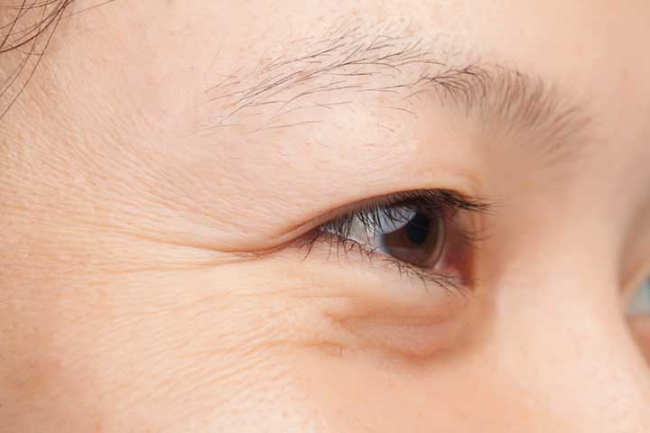

What causes our skin to age?

BENJAMIN FRANKLIN ONCE declared that "we get old too soon and wise too late." Applying a little wisdom, though, may keep you from aging before your time. "Only about 5 to 20 percent of the aging process has to do with our genes," says Jonny Bowden, a nutritionist and best-selling author of numerous books including his recently released The Most Effective Ways to Live Longer. "The rest has to do with how we treat our bodies, which determines whether, like a light switch, we turn the good genes on and the bad genes off." His book identifies what he calls "the four horsemen of aging," which are thought to be dangerous processes that age our bodies and are triggered by the foods we eat and the lifestyles we lead. Conquer these four horsemen, Bowden contends, and you can slow down the aging process and help stave off heart disease, cancer, and diabetes.
-
Free radicals. Similar to the way rust attacks a car, free radicals—chemically unstable molecules—attack our cells and damage our DNA, a process that many experts believe accelerates aging.
Free radicals are also known to increase the risk of cancer. You can't, unfortunately, completely avoid these molecules—they're present in the air you breathe—but you can limit your exposure to them, says Bowden, by avoiding things like cigarettes, trans fats (partially hydrogenated oils which have been banned from many foods), excess sun exposure, charred meats, and other sources. Bowden also recommends buying organic fruits and vegetables whenever possible to limit your exposure to pesticides and herbicides, which also contain the harmful molecules. If you can't afford to go completely organic, try to at least buy the following foods organically: peaches, apples, blueberries, bell peppers, celery, nectarines, strawberries, cherries, imported grapes, spinach, kale, and potatoes. Last year, the Environmental Working Group found that these "dirty dozen" contain the highest level of chemical residue when compared to other kinds of produce. That being said, fruits and vegetables are also chock full of antioxidants, which are thought to neutralize free radicals, so you should still aim to get five servings a day, organic or not. Those with the highest amount of antioxidants include prunes, raisins, blueberries, blackberries, and kale.
-
Inflammation. Normally part of a healthy immune response to foreign invaders, inflammation is now considered to be a major player in many diseases of aging including cancer, diabetes, heart disease, and Alzheimer's—that is, when it becomes chronic. This happens when the immune system begins targeting healthy cells and tissues for attack. How to keep inflammation at bay? One trick is to follow a Mediterranean-style diet, says Bowden, based on whole grains, fatty fish like salmon and tuna, fruits, vegetables, and monounsaturated fats (nuts, avocados, and olives) with little meat. "Studies have shown that heart patients who follow this diet have much lower rates of heart attacks, even if they still have high cholesterol," he says. Other great anti-inflammatory foods include: spices like turmeric, and chocolate (the really dark kind that has 70 percent or higher cacao content).
Exercise is another great way to lower inflammation by boosting anti-inflammatory chemicals and helping you avoid weight gain through the years. (Having too much belly fat, defined as a waist measurement of more than 35 inches for a woman and 40 inches for a man, means you probably have high inflammation, since abdominal fat produces inflammatory chemicals.) Aim for a moderate amount of steady exercise like brisk walking, swimming, or biking for 30 to 45 minutes five days a week—the amount most experts recommend. But don't overdo it to the point of soreness and extreme fatigue, since too much exercise can actually increase inflammation, at least temporarily.
-
Glycation. This is a fancy word for too much sugar, or rather, what happens when the sugar mixes with proteins and fats to form molecules that promote aging. Advanced glycation end products, or AGEs, are thought to accelerate the aging process by churning out free radicals and promoting inflammation. They form when you caramelize onions in a frying pan, for example, or mix a little sugar in with that omelette you're cooking. One way to avoid ingesting AGEs? Turn down the heat when you cook, says Bowden. The browning effect that occurs when you stir-fry vegetables at high heat or blacken chicken in a frying pan causes these molecules to form, especially if you're adding sugar to the mix. Limiting your intake of sugar-filled foods in general will also help, since excess sugar often binds to proteins in your body to form AGEs. The American Heart Association now recommends that women consume no more than 100 calories per day of added sugars, and men no more than 150 calories per day. Aside from increasing your risk of heart disease, AGEs appear to play a role in diabetes by causing blood to become sticky and hampering its ability to flow smoothly through capillaries and into the extremities and vital organs like the kidneys and eyes. "It's like putting sugar in your gas tank," says Bowden, "it gums up the works."
-
Stress. Why do U.S. presidents age twice as rapidly when in office than when not? Too much stress. Being under pressure initiates the release of a variety of stress hormones that make your pulse race and cause your blood pressure to rise. But the hormone cortisol, released to lessen these effects, actually creates problems when it remains chronically elevated; it has been shown to shrink a part of the brain called the hippocampus, Bowden says, which is essential for long-term memory. It can also lead to the accumulation of belly fat, causing inflammation and insulin resistance. Bowden recommends practicing relaxation techniques like meditation or yoga to help manage stress, but even he admits that he has trouble devoting 30 minutes a day to doing so. "I usually just take five minutes every so often throughout my day to close my eyes and focus on my breathing," he says. Getting too little sleep is akin to feeling too much stress in terms of your body's increased production of cortisol, so make sure to aim for 7 to 8 hours a night.